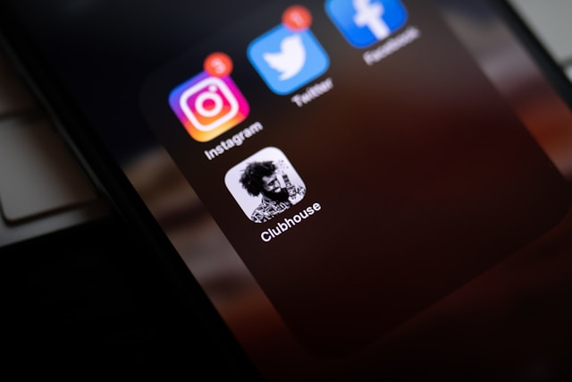
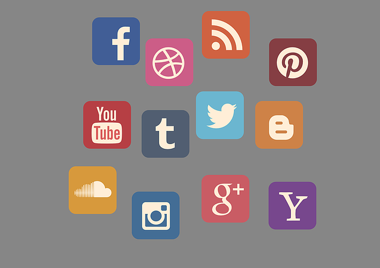
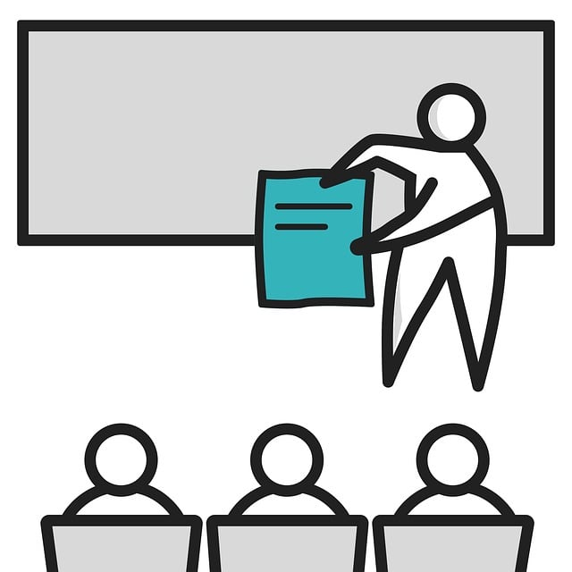
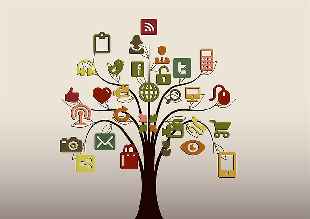

Como Criar uma Estratégia de Redes Sociais Eficiente
Descubra as melhores práticas para desenvolver uma estratégia de redes sociais que gera resultados. Neste artigo, vamos explorar os passos essenciais para criar uma presença online eficaz e engajante. As redes sociais são uma ferramenta poderosa para qualquer negócio, mas é importante utilizá-las de forma estratégica para obter o máximo de benefícios.
1. Defina seus objetivos
Antes de começar, é crucial estabelecer metas claras para sua estratégia de redes sociais. Isso permitirá que você direcione seus esforços de forma eficaz e meça seus resultados. Alguns objetivos comuns incluem:
- Aumentar o reconhecimento da marca
- Gerar leads e aumentar as vendas
- Melhorar o engajamento com o público
- Fornecer suporte ao cliente e criar uma comunidade
Definir metas claras ajudará a alinhar sua presença online com as necessidades e expectativas do seu público.
2. Conheça seu público-alvo
Um dos pilares de uma estratégia de sucesso é entender com quem você está falando. Pesquise e crie personas detalhadas do seu público ideal. Responda perguntas como:
- Quais são os interesses e preocupações do meu público?
- Quais plataformas eles utilizam?
- Quais tipos de conteúdo mais atraem sua atenção?
Isso permitirá que você crie conteúdo mais relevante e personalizado, aumentando as chances de engajamento e conversões.

3. Escolha as plataformas certas
Nem todas as redes sociais são adequadas para todos os negócios. Selecione as plataformas onde seu público está mais ativo e que melhor se alinham com seus objetivos. Por exemplo:
- Instagram: Ideal para negócios visuais, como moda, gastronomia e design.
- LinkedIn: Focado em networking profissional e B2B (negócios entre empresas).
- Facebook: Amplo, mas com foco em comunidades e interações em grupos.
- Twitter: Excelente para atualizações rápidas e interação direta.
- TikTok: Para conteúdos criativos e vídeos curtos com grande potencial viral.
Concentre-se nas plataformas onde você pode se conectar mais efetivamente com seu público-alvo.
4. Crie um calendário de conteúdo
Uma presença consistente é a chave para o sucesso nas redes sociais. Desenvolva um calendário de conteúdo que equilibre diferentes tipos de postagens, como:
- Conteúdo informativo (artigos, guias, dicas)
- Conteúdo promocional (lançamento de produtos, ofertas)
- Conteúdo interativo (enquetes, perguntas, quizzes)
Agendar publicações com antecedência ajuda a manter consistência e evita períodos de inatividade.
5. Engaje-se com sua audiência
As redes sociais são uma via de mão dupla. Responder a comentários, mensagens e menções prontamente demonstra que sua marca está atenta e valoriza a interação com os clientes. Aqui estão algumas ideias para gerar mais engajamento:
- Crie enquetes ou perguntas que incentivem a participação.
- Promova concursos ou sorteios para aumentar o envolvimento.
- Responda a feedbacks de forma aberta e amigável.
O engajamento é essencial para construir uma comunidade em torno da sua marca e fidelizar clientes.
6. Analise os resultados e ajuste a estratégia
O trabalho não termina após a publicação. Utilize ferramentas como o Facebook Insights ou Google Analytics para monitorar o desempenho das suas postagens. Avalie o que está funcionando e faça ajustes constantes para otimizar sua estratégia.
Lembre-se: o marketing nas redes sociais é uma jornada contínua, onde os ajustes baseados em dados fazem toda a diferença.
Solicite seu Projeto de Redes Sociais
Quer melhorar sua presença nas redes sociais e alcançar mais clientes? Nossa equipe pode ajudá-lo a desenvolver uma estratégia personalizada e otimizada para o seu negócio. Entre em contato conosco para uma consulta gratuita!
Pronto para elevar suas redes sociais?
Deixe-nos ajudá-lo a crescer nas plataformas sociais com uma estratégia eficaz e engajante. Solicite seu projeto de redes sociais agora mesmo!
Solicitar Projeto